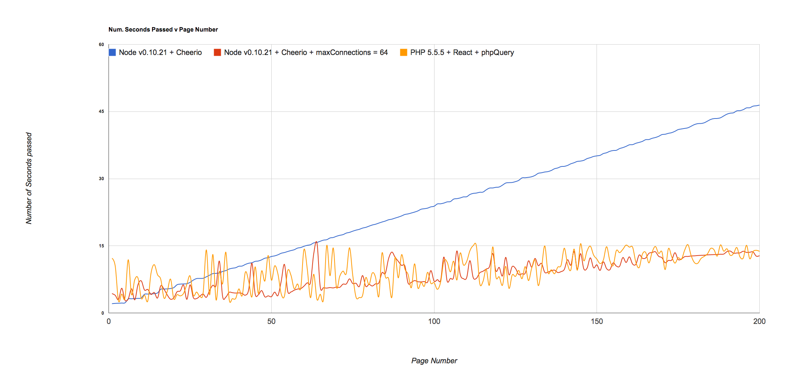

Drupal in 2020
Presented by Larry Garfield (@Crell)
@Crell

- Senior Architect, Palantir.net
- Drupal 8 Web Services Lead
- Drupal Representative, PHP-FIG
- Advisor, Drupal Association
implements Huggable
Let's never do that again
We spent 4 years playing catch up
Wordpress had a REST API years ago
Joomla was responsive by default in 2012.
I'd hate to sound like a hater, but the 'breakthru' #Drupal8 features seem like what #EPiServer 7 had 3 yrs ago pic.twitter.com/Vi7oGzmvcp
— Arild Henrichsen (@ahenrichsen) July 13, 2015
The market is moving faster than we are
Technology is moving even faster.
Since Drupal 8 was started...
- Composer/Packagist
- PHP-FIG
- Symfony2
- Flexbox
- PHP 5.4, PHP 5.5, PHP 5.6, PHP 7?
- IE 9, IE 10, IE 11, Edge
We need to get out in front
Drupal 8 release schedule

Only part of the solution
Where will we need to be in
5 years?


Let's look at trends
Push-web
I believe that for the web to reach its full potential, it will go through a massive re-architecture and re-platforming in the next decade... The future of the web is "push-based", meaning the web will be coming to us.
—Dries Buytaert, The Big Reverse of the Web
Saving the Open Web
For the Open Web to win, we first must build websites and applications that exceed the user experience of Facebook, Apple, Google, etc. Second, we need to take back control of our data.
To deliver the best user experience, you want “loosely-coupled architectures with a highly integrated user experience”
—Dries Buytaert, Winning Back the Open Web
Decoupled CMS
Separate "editorial" from "presentational" install
- Static generator
- View-only application
- Twin installs (weird!)
- Live Content server / presentation server

HTML, CSS, user interaction, analytics, social media integration, public user interaction, etc. are content delivery concerns. Content modeling, workflow, editing, indexing, etc. are content management concerns.
—Deane Barker, Decoupled Content Management 101
Headless (JS apps)

- High-traffic API
- ... The same API as live content server?
- Micro-transactions
Drupal based on micro-services?
Drupal as a microservice?
Drupal as microservices?
The Real-Time Web
EventSource/SSE
Websockets
HTTP/2
Persistent connections with server-push
Our current way of running Drupal is
woefully inadequate
The problem is CGI
Common Gateway Interface
- NCSA, 1993
- "specification for calling command line executables"
- Pass environment variables to script
$_SERVER
Shared nothing design can't keep up
- OS overhead
- No connection persistence
- Wasteful application boot
How much of Drupal 8 is designed around
compensating for shared-nothing?
It's time to leave CGI behind

Non-CGI PHP
Yes, for reals
React PHP
Like NodeJS, but in PHP
The way to do Websockets in PHP today
React web server
$i = 0;
$app = function ($request, $response) use (&$i) {
$i++;
$text = "This is request number $i.\n";
$headers = array('Content-Type' => 'text/plain');
$response->writeHead(200, $headers);
$response->end($text);
};
$loop = React\EventLoop\Factory::create();
$socket = new React\Socket\Server($loop);
$http = new React\Http\Server($socket);
$http->on('request', $app);
$socket->listen(1337);
$loop->run();
Asynchronous IO
Non-Blocking IO
- Tell OS to handle IO for you
- Return from call immediately
- Check back later
(PHP inherits C's attrocious API)
Non-Blocking IO
$socket = socket_create(AF_INET, SOCK_STREAM, SOL_TCP);
socket_set_nonblock($socket);
@socket_connect($socket, $ip_address, $port);
socket_write($socket, $out);
while (true) {
$sockets = [$socket];
$null = NULL;
$changed_sockets = socket_select($sockets, $null, $null, 0);
if ($changed_sockets == false) {
// Error
}
else if ($changed_sockets > 0) {
$data = socket_read($socket, 4096);
// Do somethign with $data.
}
else {
// Do something else for a while.
}
}
React abstracts this out for you.
Promises
Solving callbacks
Deferred execution on async
Promises
function dbFetch($id) {
$deferred = new React\Promise\Deferred();
// Execute a Node.js-style function using the callback pattern
getDataFromDBAsync($id, function ($error, $result) use ($deferred) {
if ($error) {
$deferred->reject($error);
}
else {
$deferred->resolve($result);
}
});
// Return the promise
return $deferred->promise();
}
dbFetch()
->then(function ($result) {
// Deferred resolved, do something with $result
return $result->fetchRow();
},
function ($reason) {
// error handling
}
)
->then(function($record) {
// Do something useful with $record.
});
Node.js is way faster than PHP!
Wrong!
Benchmarking Codswallop, Phil Sturgeon
Icicle
Generators
Shortcut for iterators
function xrange($start, $end) {
for($i = $start; $i <= $end; ++$i) {
yield $i;
}
}
foreach(xrange(1, 1000000000) as $val) {
// ...
}
Sending to generators
function power($pow) {
$val = yield;
while ($val) {
$result = $val * $val;
$val = (yield $result);
}
yield "Done";
}
$s = power(2);
print $s->send(5) . PHP_EOL;
print $s->send(3) . PHP_EOL;
print $s->send(0) . PHP_EOL;
25
9
Done
function logger($config) {
$socket = openAsync($config);
while (true) {
$val = yield;
socket_write($socket, $val . PHP_EOL, strlen($val) + 1);
}
}
$logger = logger([...]);
$logger->send('Foo');
$logger->send('Bar');
Foo
Bar
Coroutines
Coroutines are computer program components that generalize subroutines for nonpreemptive multitasking, by allowing multiple entry points for suspending and resuming execution at certain locations.
Basic Icicle usage
use Icicle\Http\Message\RequestInterface;
use Icicle\Http\Message\Response;
use Icicle\Http\Server\Server;
use Icicle\Loop;
$server = new Server(function (RequestInterface $request) {
$response = new Response(200);
yield $response->getBody()->end('Hello, world!');
yield $response->withHeader('Content-Type', 'text/plain');
});
$server->listen(8080);
echo "Server running at http://127.0.0.1:8080\n";
Loop\run();
Promises in Icicle
use ...;
$resolver = new Resolver(new Executor('8.8.8.8'));
// Method returning a Generator used to create a Coroutine (a type of promise)
$promise1 = new Coroutine($resolver->resolve('example.com'));
$promise2 = $promise1->then(
function (array $ips) { // Called if $promise1 is fulfilled.
$connector = new Connector();
return new Coroutine($connector->connect($ips[0], 80)); // Return another promise.
// $promise2 will adopt the state of the promise returned above.
}
);
$promise2->done(
function (ClientInterface $client) { // Called if $promise2 is fulfilled.
echo "Asynchronously connected to example.com:80\n";
},
function (Exception $exception) { // Called if $promise1 or $promise2 is rejected.
echo "Asynchronous task failed: {$exception->getMessage()}\n";
}
);
Loop\run();
HHVM
- Facebook reimplementation of PHP
- Mostly compatible
- Much faster than 5.6 (on par with 7)
Hack
- Extended PHP language
- New syntax!
- Had scalar types before they were cool
- Short lambdas, generics, shapes, constructor promotion...
And...
Native Async
async function hello() {
return "Hello World";
}
async function goodbye() {
return "Goodbye, everybody!";
}
async function run(array $handles) {
await AwaitAllWaitHandle::fromArray($handles);
return array_map(function ($handle) { return $handle->result(); }, $handles);
}
$results = run(array(hello(), goodbye()))->getWaitHandle()->join();
print_r($results);
Array
(
[0] => Hello World
[1] => Goodbye, everybody!
)
Native Async with I/O
async function fibonacci_gen($num) {
$n1 = 0; $n2 = 1; $n3 = 1;
for ($i = 2; $i < $num; ++$i) {
$n3 = $n1 + $n2;
$n1 = $n2;
$n2 = $n3;
if (!($i % 100)) {
// Give other tasks a chance to do something
// every 100th iteration
await RescheduleWaitHandle::create(
RescheduleWaitHandle::QUEUE_DEFAULT,
0,
);
}
}
return $n3;
}
$results = run(array(
"web" => curl_exec_await("http://example.com"),
"sql" => mysql_async_query($conn, "SELECT * FROM user"),
"disk" => file_async_contents("/var/log/access.log"),
"mc" => memcached_async_get("somekey"),
"fib" => fibonacci_gen(2000),
))->getWaitHandle()->join();
Forking PHP!
Kiwi
$children = array();
$num_processors = 3;
// Spawn off children to do work.
for ($child_id = 1; $child_id <= $num_processors; ++$child_id) {
$pid = pcntl_fork();
if ($pid == -1) {
die('could not fork');
}
else if ($pid) {
// This is the parent. Do nothing here but let the loop complete.
$children[] = $pid;
}
else {
// This is the child.
do_child_stuff(...);
// Kill the child process when done.
exit(0);
}
}
// Wait for all of the spawned children to die.
$status = 0;
foreach ($children as $pid) {
pcntl_waitpid($pid, $status);
}
Forking server
function server_loop($address, $port) {
$sock = socket_create(AF_INET, SOCK_STREAM, 0);
socket_bind($sock, $address, $port);
socket_listen($sock, 0);
socket_set_nonblock($sock);
while (true) {
$connection = @socket_accept($sock);
// No incoming messages, check again later.
if ($connection === false) {
usleep(100);
}
elseif ($connection > 0) {
$pid = pcntl_fork();
if ($pid == -1) {
die('could not fork');
}
else if ($pid) {
// This is the parent. Do nothing here but let the loop complete.
}
else {
// This is the child.
do_child_stuff(...);
// Kill the child process when done.
exit(0);
}
}
}
}
In development, Process manager with Channels for IPC
Who will win?
¯\_(ツ)_/¯
CGI won't go away entirely
We just need to work without it
Yes, we will need both!
What we need
Different configurations of common
Drupal components
We need components that can run in any mode!
Resuable components
- Stateless (Not one single global!)
- No request(stack) dependencies
- Container-free
- Isolated IO
- As little custom code as possible
Dare I say, pure functional? (I dare)
The same clean-code standards we've been pushing for years!
This is why
Challenges
- Entity API: too many statics, service dependencies
- Render API: Render context?
- ContainerAware: Coupled to one container
- RequestStack: Subrequests, not async
Separate repos?
Thread-safe code can easily be used in CGI mode, but not vice versa.
It's also far more testable.
This is within sight...
... because Drupal 8
But what if you're wrong?
—Everyone in this room
Left with...
- Highly decoupled...
- Highly testable...
- Resuable...
- Sharable...
Components
Win!
Tools
PHP Resources
- Generators
- PHP process control (PCNTL)
Further reading
- An Introduction to Event Loops
- Multi-process PHP by Chris Pitt, Part 1, Part 2, Part 3
- Cooperative Multi-tasking using coroutines (in PHP!),
- Socket Programming with PHP, by Elizabeth Smith
- Async Cooperative Multitasking for Hack, by Sara Golemon
Larry Garfield
Senior Architect, Palantir.net
Making the Web a Better Place
Keep tabs on our work at @Palantir
Want to hear about what we're doing?